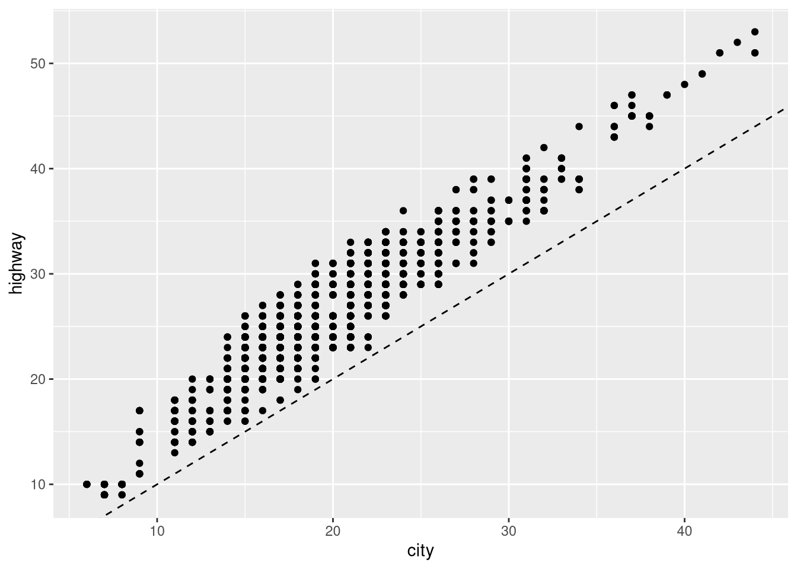
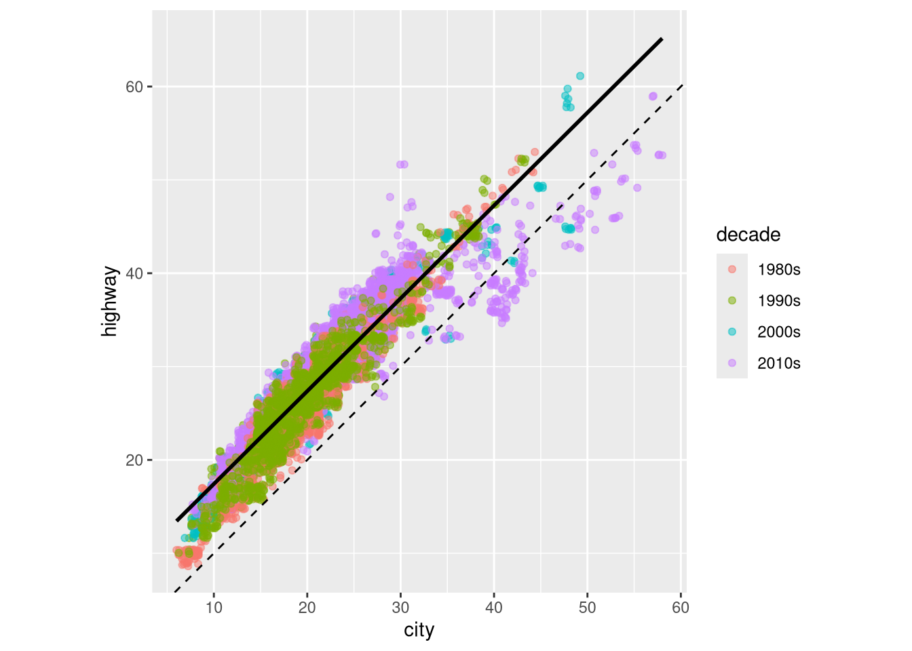
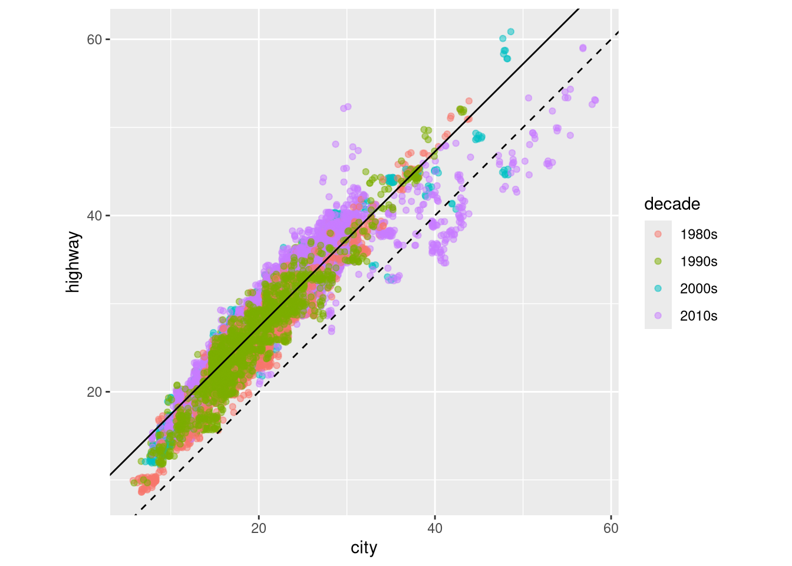

This assignment is intended to give you experience using ggplot2 as well as developing an understanding of quantiles in numeric data. For this assignment, we will be using the mpg_hawkes dataset available in the stat1080r package.
NoteSetup: stat1080r
You only need to install this package once per semester, using install.packages("stat1080r", repos = "https://beanb2.r-universe.dev"). However, you still need to use library(stat1080r) each time you start R. The block of code below will check that stat1080r is installed, and if not, it will install it before loading the library. It will also check that essential packages within the tidyverse are installed, and if not, will install those packages.
This assignment will focus on the mpg_hawkes dataset. For more information about the variables in mpg_hawkes, please use the ?mpg_hawkes command in the console. Note that the dataset will only be available to use after running library(stat1080r) in your R session.
The following code takes mpg_hawkes and creates two new variables. The first variable, decade, is a factor variable that provides the decade the vehicle was made. The second variable, v_class_2, is a factor variable that provides the vehicle type. I have used regular expressions to group some smaller categories into larger groups. Note that you must run this provided code in order to answer the rest of the questions in this assignment.
1 Problem: Types of Variables
The following code considers a subset of the variables in mpg_hawkes
Of these four variables, which are “quantitative” and which are “categorical” (i.e., “qualitative”), please provide your answer to this question in the associated Canvas quiz.
city and year are quantitative variables because they are numbers that can be ordered, while fuelType and trans are categorical variables.
2 Problem: Calculating Quantiles
The following code uses the quantile function to determine the 90th percentile of city miles per gallon (mpg). This is the mpg quantity for which 90 percent of the 38,000+ vehicles in our dataset have city mpg ratings less than or equal to this value.
q90_city <- mpg_hawkes |>pull(city) |># extract the city column as a vectorquantile(0.9) # extract the 90th percentile of the city column vectorq90_city
90%
24
Using the above code as reference, find the 90th percentile highway mpg rating for the vehicles in our dataset and then note this amount in your Canvas quiz.
Discuss briefly (2 min or less) with a partner Based on what you know about vehicles, why do you think that the highway mpg are larger than city mpg?
Vehicles traveling in the city have to stop and accelerate constantly, which is not very efficient. Vehicles on the highway are able to travel more efficiently because they are able to maintain high speeds without having to stop.
4 Problem: City and Highway Mileage
Create a plot that compares city (x-axis) vs highway (y-axis) mileage for “Cars” (as defined in the v_class_2 variable) from the 1980s.
HINT: This will require a filter statement with two logical conditions.
This will require you to first subset the rows of the data and then use ggplot2 to visualize. The provided code will create the “line of equality” (i.e., the line where x = y) which will help us to visualize how different city and highway mileage are for vehicles in this decade. Points above the line are vehicles for which highway mpg > city mpg, points below are vehicles for which city mpg > highway mpg.
mpg_hawkes |>filter(v_class_2 =="Cars"& decade =="1980s") |>ggplot(aes(x = city, y = highway)) +geom_point() +geom_abline(slope =1, intercept =0, lty =2)

5 Problem: Plot Modifications
The following code makes the following adaptations to the visual you created in the previous problem.
Plot vehicles across all decades, rather than just the 1980s, coloring each point based on the decade that the vehicle was produced.
HINT: Remember that the floor() function rounds down to the nearest whole number. Can you use that, division, and multiplication to make a decade variable? You may want to take the numeric decade (say you’ve called it decade) and use decade = factor(decade, ordered = T) to convert it to a factor so that ggplot2 interprets it as a categorical variable.
Use the geom_jitter() geometry to randomly move the points slightly up/down and left/right to help with “overplotting” (multiple observations that have exactly the same x and y coordinates and are plotted on top of each other).
Use the alpha argument to make the points semi-transparent, which will further aid with the overplotting issue in the graph with so many observations.
Fit a “linear model” to the points to find the “line of best fit” between city and highway mileage and add it to the plot. This is the solid line.
Provide the “line of equality” as in the previous plot. This is the dashed line.
mpg_cars <- mpg_hawkes |>filter(v_class_2 =="Cars")ggplot(mpg_cars, aes(x = city, y = highway, color = decade)) +geom_jitter(alpha =0.5) +geom_abline(intercept =0, slope =1, lty =2) +# line of equalitygeom_smooth(aes(x = city, y = highway),inherit.aes = F, method ="lm", color ="black") +# regression linecoord_fixed()

Another way to do this is to explicitly fit the linear regression (this allows you to actually see what the equation is and/or examine how well it fits), and then plot the regression line directly.
mpg_lm <-lm(highway ~ city, data = mpg_cars)summary(mpg_lm)
Call:
lm(formula = highway ~ city, data = mpg_cars)
Residuals:
Min 1Q Median 3Q Max
-14.1886 -1.3680 0.5994 1.6103 14.6864
Coefficients:
Estimate Std. Error t value Pr(>|t|)
(Intercept) 7.476697 0.055511 134.7 <2e-16 ***
city 0.994564 0.002774 358.5 <2e-16 ***
---
Signif. codes: 0 '***' 0.001 '**' 0.01 '*' 0.05 '.' 0.1 ' ' 1
Residual standard error: 2.057 on 19858 degrees of freedom
Multiple R-squared: 0.8662, Adjusted R-squared: 0.8662
F-statistic: 1.285e+05 on 1 and 19858 DF, p-value: < 2.2e-16
ggplot(mpg_cars, aes(x = city, y = highway, color = decade)) +geom_jitter(alpha =0.5) +geom_abline(intercept =0, slope =1, lty =2) +# line of equalitygeom_abline(intercept = mpg_lm$coefficients[1], # line of regressionslope = mpg_lm$coefficients[2]) +coord_fixed()

Notice in these plots that there are a lot of purple points that fall well below the line of best fit, which means that the highway mileage was less than expected based on their city mileage. Discuss briefly (2 min or less) with a partner what might cause modern vehicles to have much higher city mileage (as compared to highway mileage) than vehicles from previous decades.
Hybrid vehicles, which are a modern invention, use batteries to store power from braking and use it to drastically improve city mileage, which “breaks” the relationship we saw between city and highway mileage in previous decades.